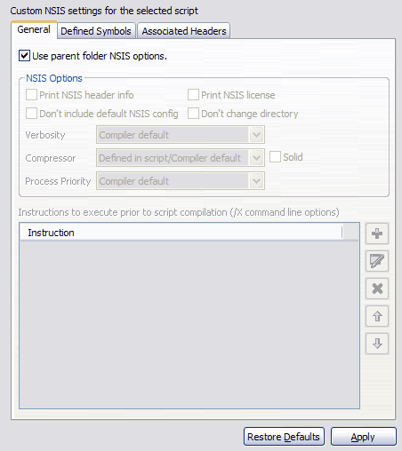
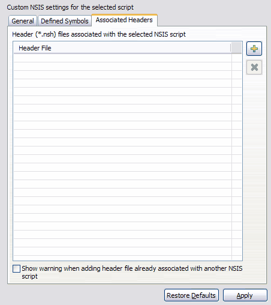

Script Properties
The EclipseNSIS Script Properties page is displayed for projects, folders or an NSIS script files (*.nsi). While the EclipseNSIS Preferences Page is used to set global options while compiling an NSIS script, the Script Properties page, on the other hand, is used to set custom script compilation options at the resource level, i.e., for projects, folders and files. The compilation options for any resource can be defaulted to those of its parent resource. The compilation options for a project resource can be defaulted to the global compilation options. The major portion of the Properties page is identical in behavior to the EclipseNSIS Preferences Page. The primary difference is the Associated Headers tab, which is available only for NSIS script files (*.nsi).

- Use parent NSIS options
- Use the appropriate parent resource options. In the case of a file, this would be the parent folder options. In the case of a folder, this would be parent folder or project options.
Associated Headers
The Associated Headers property page is used to associate NSIS header files (*.nsh) with an NSIS script file (*.nsi). The advantage of this is the ability to use EclipseNSIS direct compilation menu items and toolbar buttons while editing a header file. That is, if any of the compile commands are invoked while a header file is being edited, EclipseNSIS will automatically use the associated script file instead of the header file. The only restrictions with associating header files and script files are:
- The header files and the script file must reside in the Eclipse workspace, i.e., they must be members of projects in the Eclipse workspace.
- A header file may be only associated with a single script file, while a script file may have several header files associated with it.

- Associated Headers
- The NSIS header files (*.nsh) associated with the selected NSIS script file (*.nsi).
- Associate Header
- Associate an NSIS header file with the NSIS script file.
- Disassociate Header
- Disassociate the selected NSIS header file(s) from the NSIS script file.
- Show Warning for Already Associated Header
- If this option is selected, a warning and confirmation message is shown when associating a header which is already associated with another NSIS script.
Previous | Contents | Next
Copyright © 2004-2010 Sunil Kamath (IcemanK).